Loyola Marymount University
MyLMU University Portal
Students, faculty, and staff at LMU use this digital portal to find needed information and complete day-to-day tasks. I worked with the IT team to re-envision this experience to be more useful, intuitive, and up-to-date.
Dates
Mar 2019 – Aug 2019
Product Type
Enterprise web
Intranet
Team
Product Owner
Project Manager
Developer
ITS Communications Manager
ITS Help Desk Manager
My Role
- Design consultant
- User researcher
- UX designer
- UI designer
My Goal
Gain a deeper understanding of student, staff, and faculty needs and redesign their portal to be more intuitive, useful, and user-centered.
Process
Exploratory research to understand student, faculty, and staff needs
Upon hearing complaints from students, faculty, and staff about the internal portal, the IT department decided to hire a UX Designer to investigate the experience and help improve user satisfaction.
Their aim was to establish a practice of gathering feedback and improving the portal based on user needs. I appreciated this user-centered approach and explained the below process for moving forward with these goals.
Methods & Participants
To start, I focused on interviewing users and stakeholders to better understand needs and pain points, reviewing analytics to see how the portal is currently used, and reviewing feedback form responses.
85
Total Partipants Interviewed
23
Students Interviewed
22
Faculty and Staff Interviewed
40
Stakeholders Interviewed
210
Days of Analytics Data Reviewed
19
Feedback Responses Reviewed
Sample interview questions
- What have you used the portal for in the last week?
- How many times have you used it?
- What university content, information, and tools are most important to you?
- What are your frustrations with the portal and current tools available?
Differing User Needs
Faculty and staff want focus on their specific department, whereas students want quick access to a variety of info and guidance
Students
- Need guidance for different purposes — classes and registration, health & wellness, employment, and success
- Have many subgroups with differing needs (prospective, international, graduate, transfer, etc.)
Faculty & Staff
- Want shortcuts for their department
- Don't want distracting marketing content
- Want focus to be on their work and what's needed
- Need clear and simple navigation
Top Pain Point
Difficulty of finding relevant links
With the current navigation of the portal, findability is difficult due to long lists, unclear labels, and lack of organization. This was by far the top frustration among all participants interviewed.
"Can be hard to find what I need. There are too many links, which can get confusing. It's not really organized."
Undergraduate student
"Too many links. Too confusing. Too time-consuming to go through the links."
Administrative coordinator
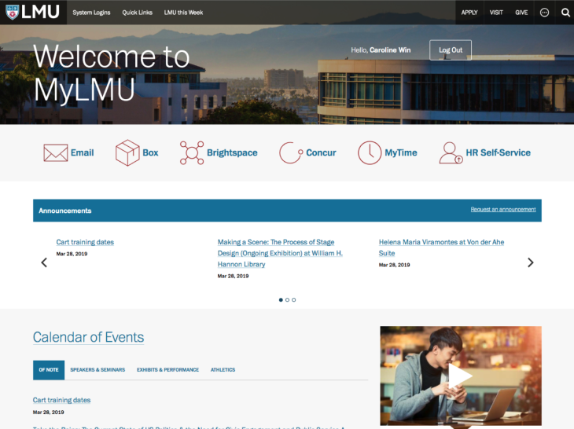
Student Responses
9/11
brought findability issues or confusion about links
Staff & Faculty Responses
5/5
mentioned similar issues
Feedback Form Responses
7/19
mentioned findability as a concern
Design implications
- Ensure findability is prioritized
- Design a navigation structure that makes sense to users
- Use clear and expected language
- Explore additional ways MyLMU can provide value — is MyLMU just a link hub?
Phase 1
Improving navigation to make important links and info easy to find
Since findability was the top concern and reorganizing navigation is a fairly low-effort change to make, we decided to first focus on this as an incremental improvement.
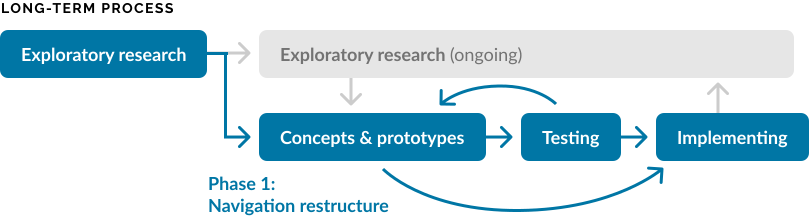
Current Navigation

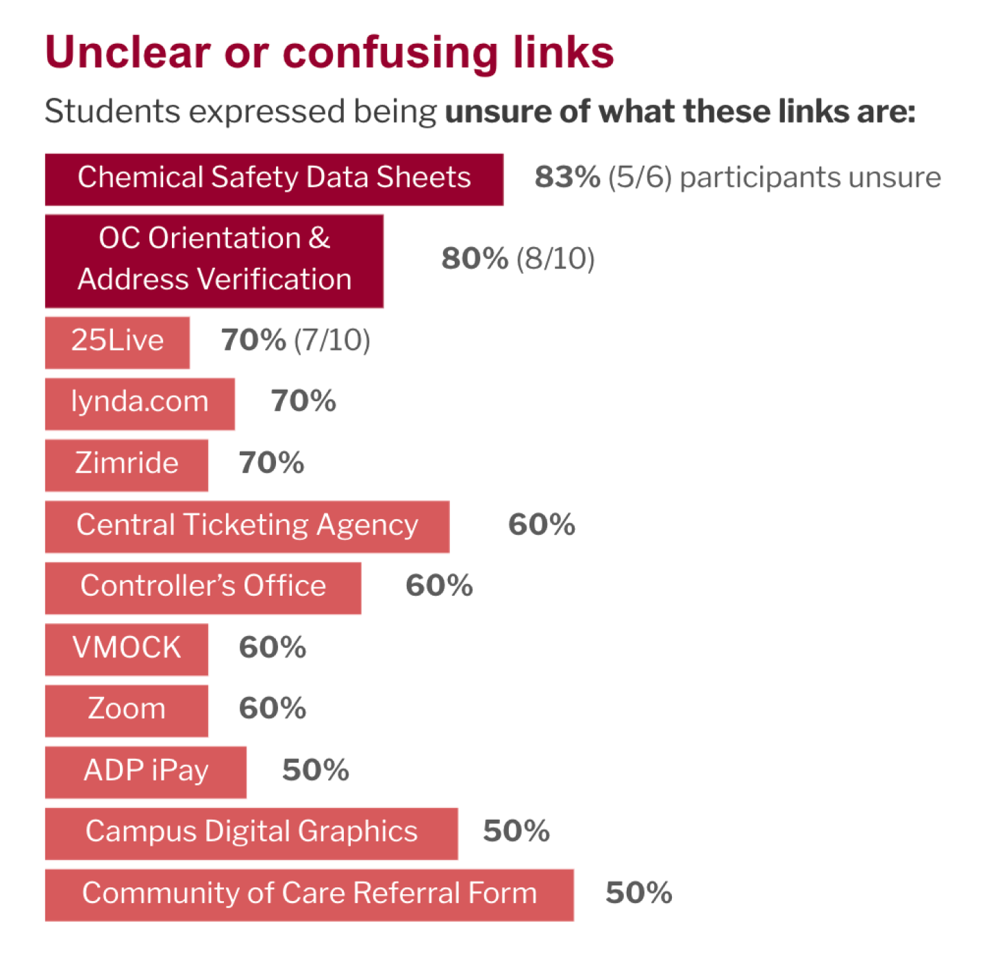
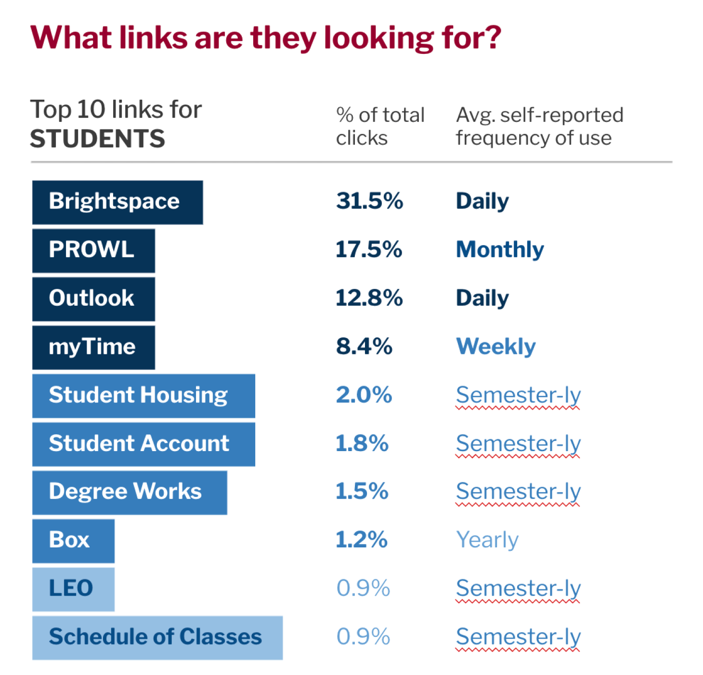
Updated Navigation
We changed the current navigation to a mega menu, which broke down the long lists into smaller logical groups and labels that made sense to users we tested with and prioritized frequently accessed links.
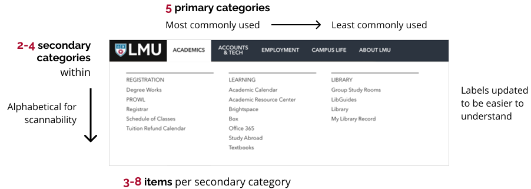
How did we determine the updates?
I proposed updates based on usability principles, analytics data, card sorting, tree testing, and direct input from students, faculty, and staff. We decided the final structure as a team by discussing these findings.
- 8 months of click data reviewed
- 16 card sorting sessions conducted
- 130 tree testing responses received
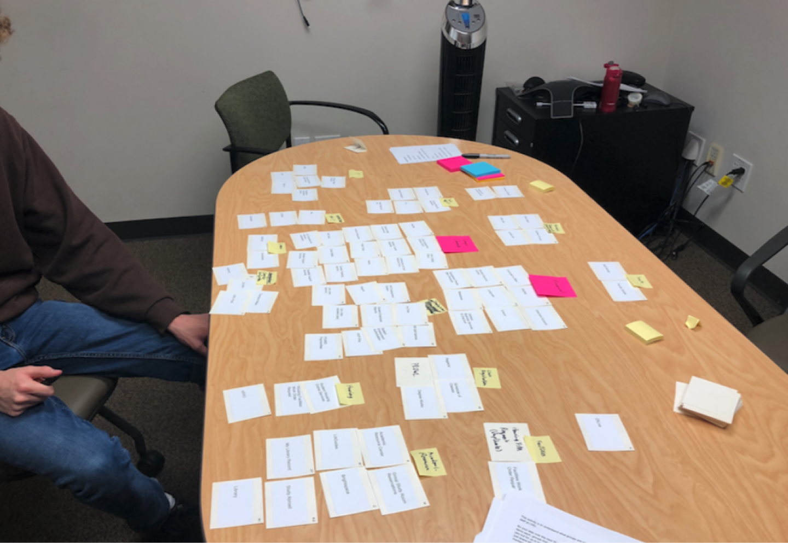
Future Phases
Additional frustrations to tackle
Too many systems, logins, and steps
13 different sites are used in the admissions process alone. Many users get frustrated, especially when first starting.
Design implication: focus on a more seamless and cohesive digital experience with fewer logins.
Lack of relevance and personalization
Content in MyLMU is not always relevant to users, especially for specific subgroups.
Design implication: determine specific needs of different groups and design a more personalized experience that prioritizes content as needed.
Announcements, events, and social info not looked at
11 / 12 students interviewed have never looked at the announcements, events, or social sections of MyLMU.
Design implication: explore different strategies for promoting news and events such as increased prominence or other mediums.
Not mobile friendly
"Anything that can be done on tablet or phone, that's going to be their preferred method."
Student Affairs Dean's Office
Design implication: prioritize mobile-first and ensure key tasks can be completed on different devices.
Concept Testing
Activity 1: 3 approaches
Based on the above findings, I created 3 high-level approaches and showed these to 15 participants for feedback. While the "flexible and customized" approach had the highest ranking, people still liked aspects of the other options.
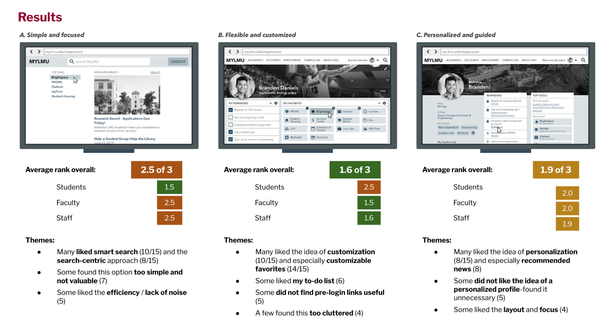
Activity 2: Design your dashboard
I also created 32 design concepts that targeted pain points and usability issues we identified and conducted sessions where participants built their own dashboard from components provided.
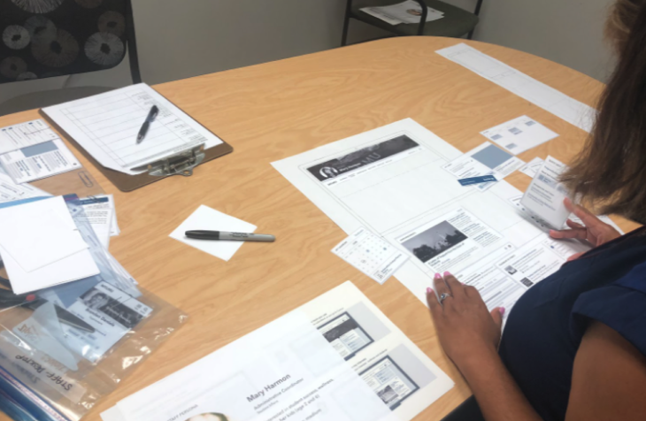
From these sessions, I ranked the concepts based on what participants chose to include, how high they placed the component, and sentiment about the idea.
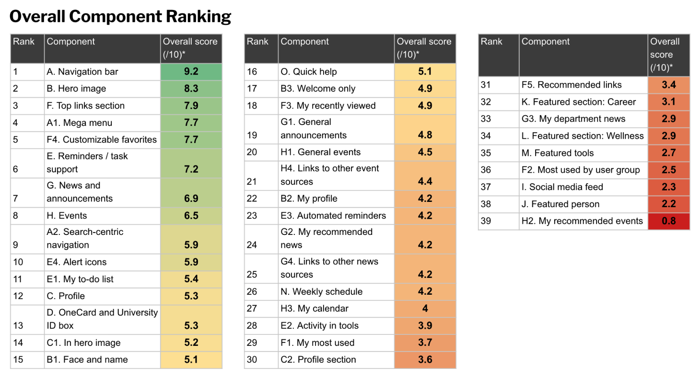
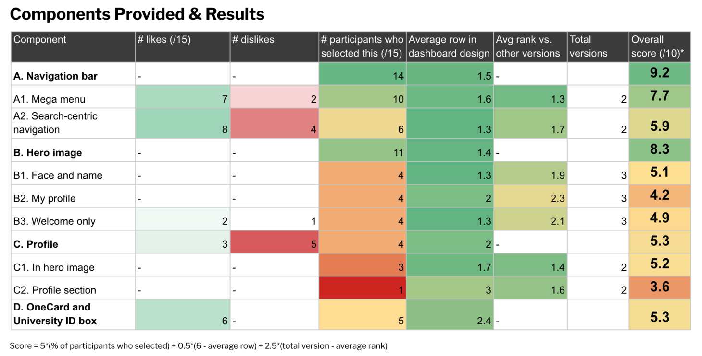
Top Concepts
Top 5 key concepts arose as highest priority to pursue in next improvements for the portal
Taking themes from participant responses in the above activities, I proposed a priority order of improvements to pursue next for the portal, including these top 5:
1. MyLMU as a central workspace
People expect MyLMU to be their own central hub to manage their work / school life and find and access needed info and tools.
Concepts: Personalized touch, focused experience, quick access to useful and relevant info
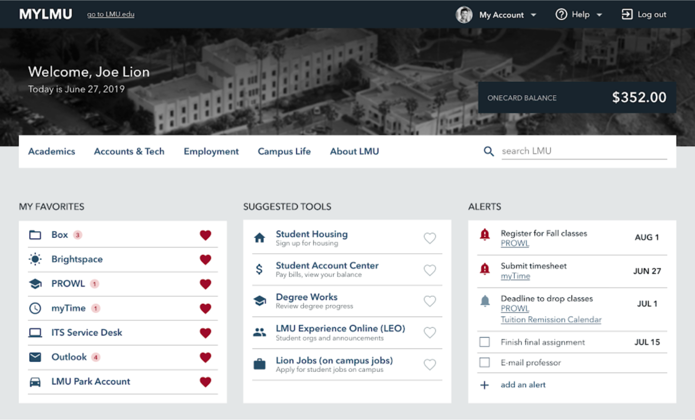
2. Dynamic and relevant top tools section
Most users have 2–5 tools they use on a regular basis to complete daily tasks and therefore need easy access to.
Concepts: Customizable favorite links, dynamic and relevant top tools
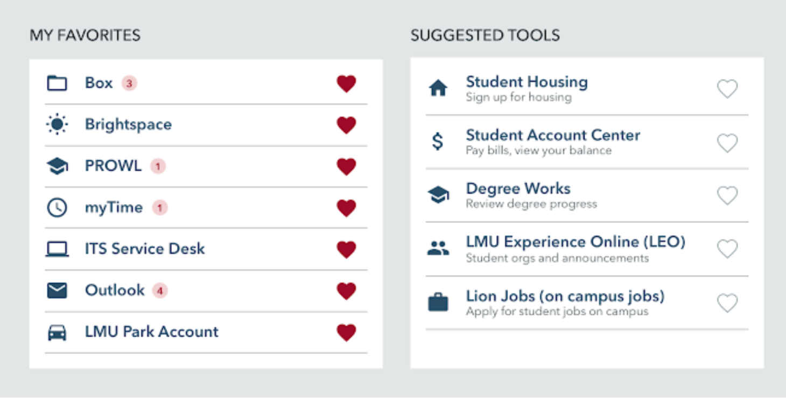
3. Smarter navigation and search to find unfamiliar links
Users will also use MyLMU to find unfamiliar tools and info on occasion.
Concepts: Organized mega menu, updated and improved smart search, separate tools and info links
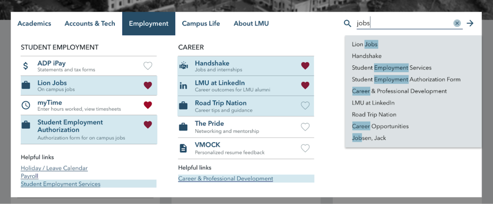
4. Support for managing urgent tasks
People want greater support from LMU regarding managing urgent and administrative tasks (e.g. entering timesheets).
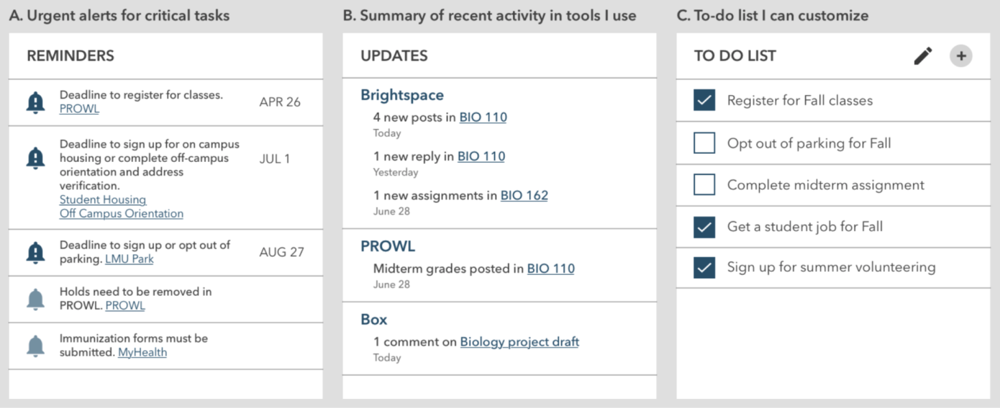
5. One consolidated calendar
People are frustrated by having so many calendars and places to go to find relevant events, important dates, and times.
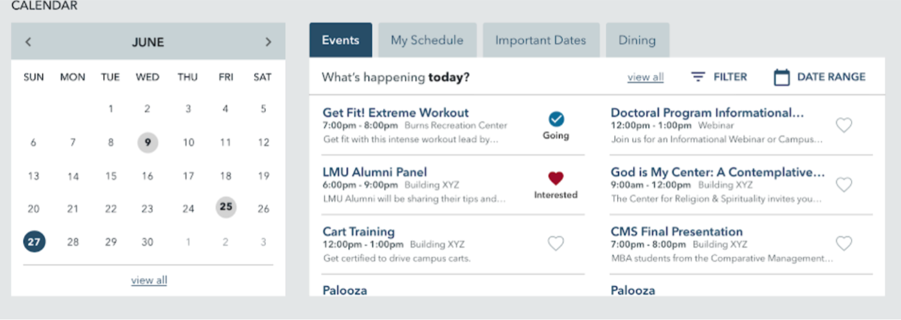
Phase 2 and Beyond
Handing off recommendations for next steps and priority of improvements
During my 6 months on this project, I supported the team in implementing the navigation restructure. I then presented and handed off a series of documents that recommended future improvements, a priority order for these improvements, and incremental steps to reach these states.
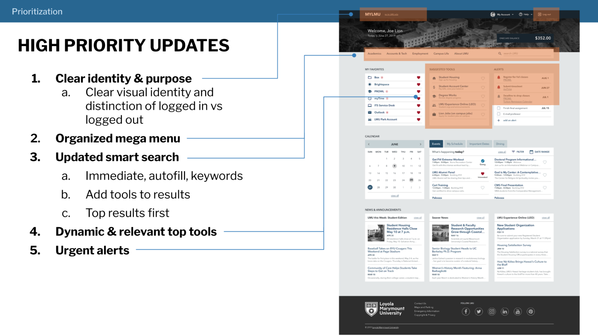
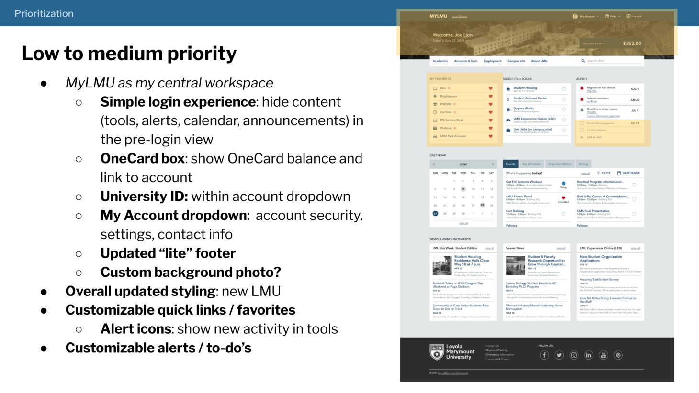
Reflection
Importance of allies as a team of one
I loved that the end-goal of this project is really to help students achieve their dreams and goals. With a system that allows them to quickly access what they need, provide new information and resources that may be useful to them, and inform them of important deadlines and announcements, we have the potential to help students succeed.
However, the big challenge was working as the single UX Designer on a small team tackling the portal for the entire university. I found that explaining the above cause to departments and students I met with really piqued their interest. They appreciated the goal and my efforts to include them and wanted to provide their input and help connect me to more resources for the project.